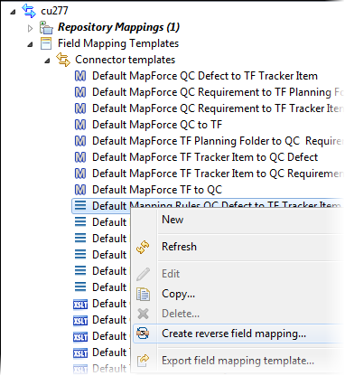
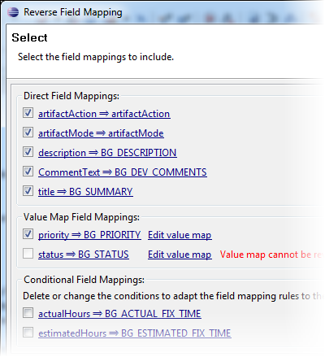
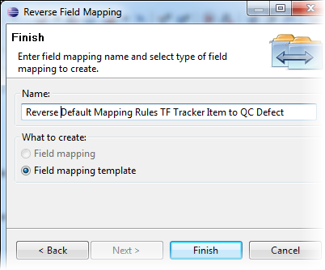

When you've designed field mapping rules for one direction, use the reverse mapping
wizard to generate the rules for the opposite direction.
The reverse field mapping wizard allows you to reverse the graphical mapping rules
of a field mapping or a field mapping template and configure and edit the generated
template. It supports direct, conditional and ValueMap mapping rules. For more
information on the reverse mapping wizard, see
this blog post.
This feature is available
with CollabNet Desktop – Eclipse Edition
version 3.6.x (and later).
-
Right-click a field mapping (or field mapping template) for the connector and
select Create reverse field mapping.

The reverse mapping wizard is launched. It displays all the constant,
direct and value map rules that you can reverse.
-
Update the field mapping rules you want reversed – you can enable or disable a
rule, or edit a rule by clicking its name.

Click Next.
-
Provide a name for the new set of mapping rules.

If you selected to reverse a field mapping rather than a field mapping
template, you can choose to save it as a new field mapping or as a template. You
can additionally choose to activate the field mapping.
-
Click Finish.